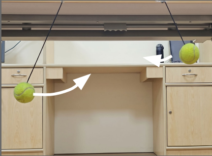

About
I am a Research Assistant at the Vision and AI Lab (VAL), Indian Institute of Science (IISc), Bangalore, advised by Prof. R. Venkatesh Babu. My research focuses on evaluating and improving the physical grounding of video generation models — particularly their ability to simulate real-world Newtonian dynamics. I am also broadly interested in multi-modal generation, editing, and personalization.
Before this, I was a Senior Engineer at Samsung R&D Institute India, Bangalore. I completed my MS (By Research) in Computer Science and Engineering from IIT Kanpur, advised by Prof. Gaurav Sharma, where my thesis work focused on audio-guided facial expression editing using StyleGAN.
Outside research, I enjoy playing guitar 🎸 and singing 🎵.
News
- Mar 2026 🎉 Objects in Generated Videos Are Slower Than They Appear was accepted to CVPR 2026 Findings.
- May 2025 Joined the Vision & AI Lab, IISc Bangalore as a Research Assistant.
- Jul 2024 Joined Samsung R&D Institute Bangalore as Senior Engineer (Research).
Publications
